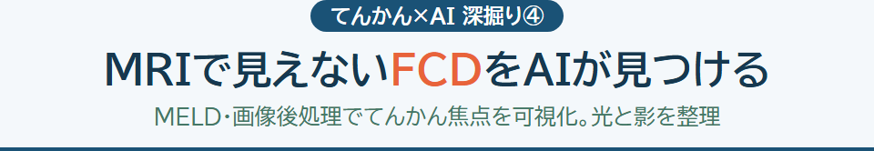
MRIで見えないFCDをAIが見つける
MELD・画像後処理でてんかん焦点を可視化。MRI陰性こそAIの主戦場、ただし汎化の壁・偽陽性も。光と影を1枚に整理【2026年版】。
診断・治療・生活のポイントを1枚に。拡大しても鮮明なHTML図解集です。
20 件の図解

MELD・画像後処理でてんかん焦点を可視化。MRI陰性こそAIの主戦場、ただし汎化の壁・偽陽性も。光と影を1枚に整理【2026年版】。
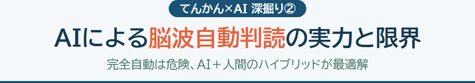
Persyst・SCORE-AIから持続脳波・基盤モデルまで。完全自動は危険、AIと人間のハイブリッドが最適解【2026年版】。
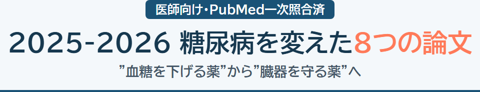
血糖を下げる薬から臓器を守る薬へ。経口GLP-1・週1回インスリン・MASH・HFpEFまで重要論文を1枚に【医師向け】。
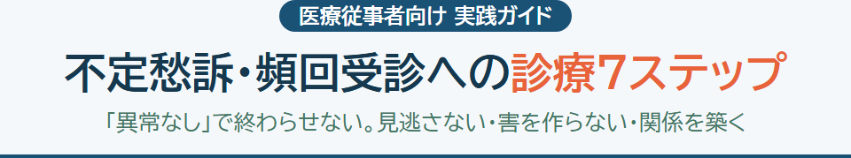
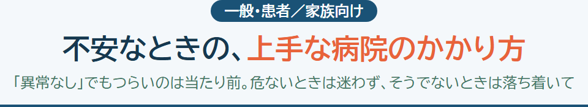
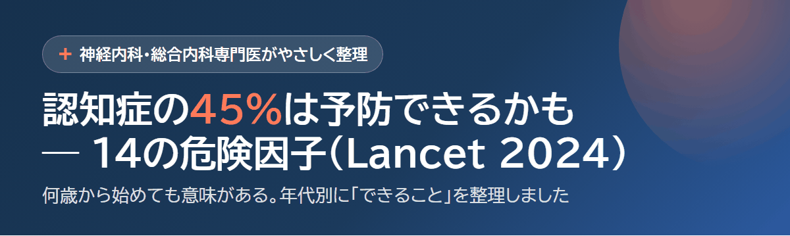
認知症のおよそ45%は14の修正可能な危険因子で予防・遅延の可能性。年代別のPAFと、難聴・高LDL・血圧・社会的孤立・視力など今日からできることを1枚に整理。
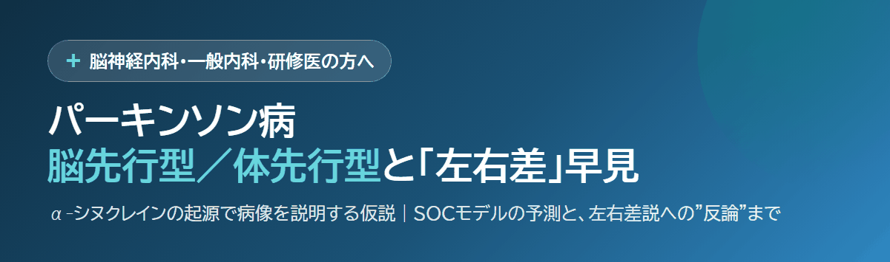
脳先行型・体先行型（brain-first/body-first）仮説、αシヌクレイン病理の伝播、運動症状の左右差とその反論。
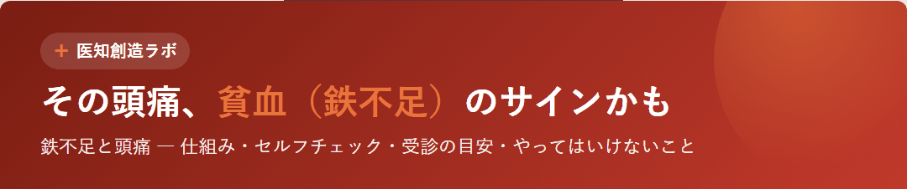
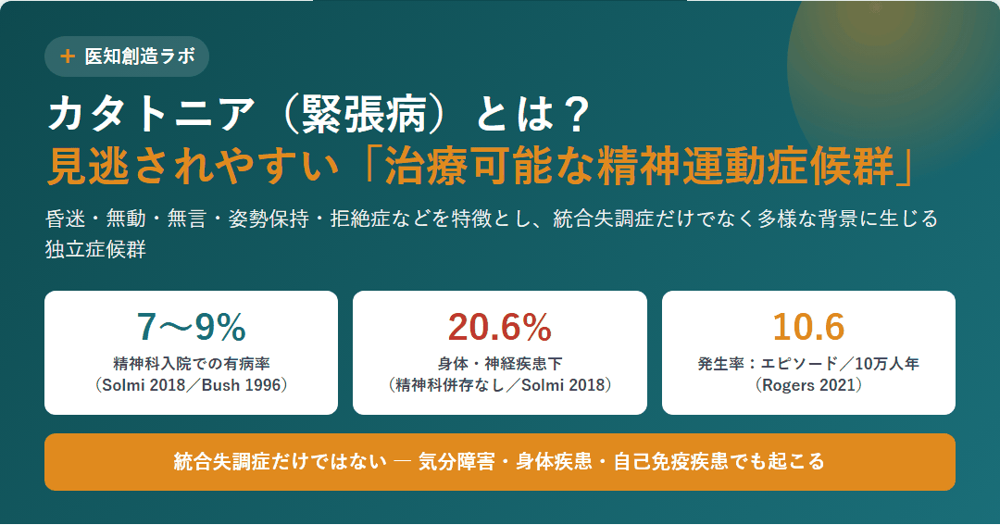
カタトニアの診断(BFCRS/DSM-5)・治療(ロラゼパム/ECT)・悪性カタトニア鑑別・抗NMDA受容体脳炎を1枚に整理
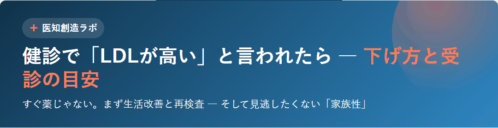
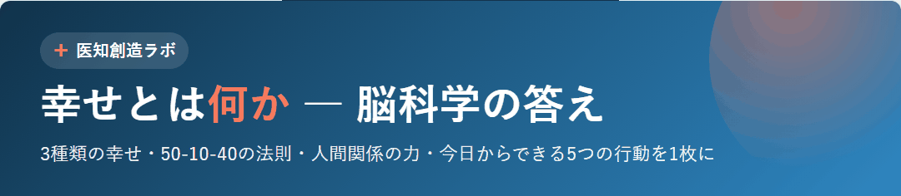
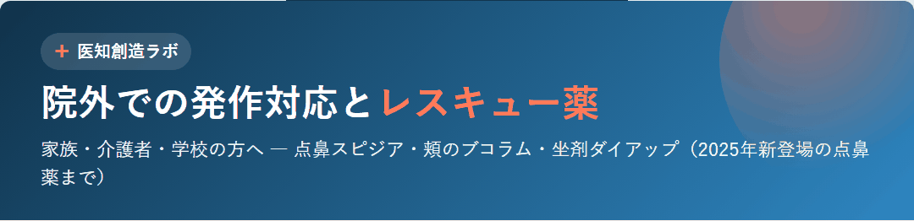
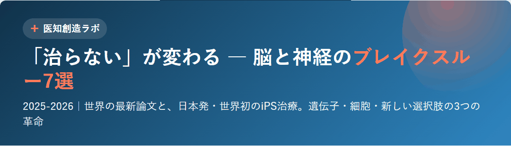
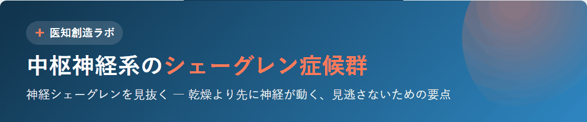
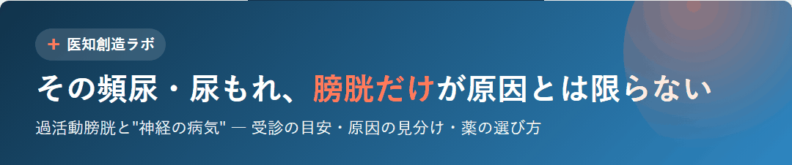
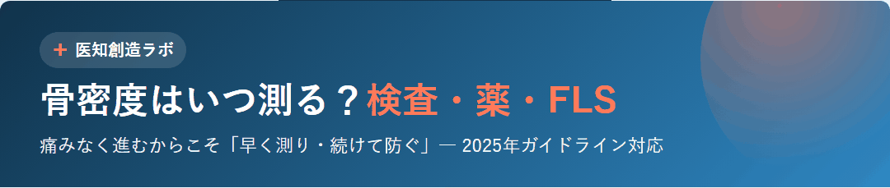
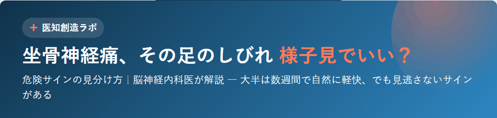
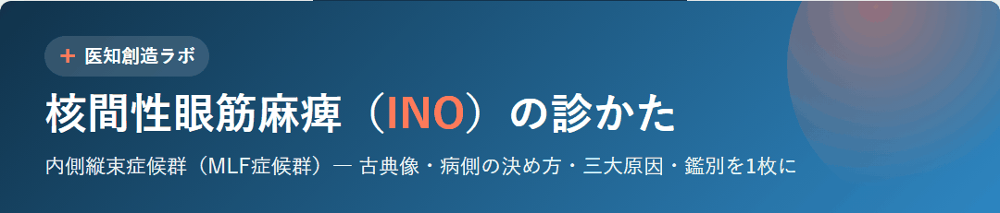
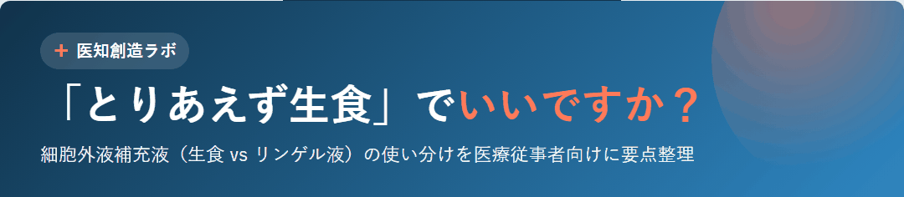
該当する図解が見つかりませんでした。